My undergraduate thesis focused on developing An energy-efficient cloud data center architectural model for the national data center of Bangladesh, under the guidance of Associate Professor Krishna Das(IUBAT). Initial version of my thesis is accepted in SUSCOM 2022 and Complete version got accepted in ISI Journal. I have expanded my research into areas into AI and HCI in my Masters' studies. Each of my Master’s course projects led to a conference paper that was accepted for presentation and publication in IEEE conferences.
Beyond academics and research, I love engaging in collaborative projects, mentoring peers, writing and reading books and exploring innovations in AI and HCI that contribute to real-world impact.
Work email: rabab (dot) rongon (at) student (dot) mist (dot) ac (dot) bd
Work email: rabab (dot) rongon (at) askturing (dot) ai
Personal email: rababrongon (at) gmail (dot) com
Photo taken at Lawachhara National Park, Moulvibazar District - the northeastern point of Bangladesh
July, 2025:
Landed my second full-time job offer! I will be joining as a Applied AI Test Engineer - III in
AskTuring AI. I will be working remotly from Bangladesh.
My research interests include leveraging HCI, AI, ML, and Software Engineering techniques to solve real-world problems. Looking forward, I am also open to study more human-centric problems from Human-AI Interaction, AI for Society and Healthcare domains.
Undergraduate Thesis
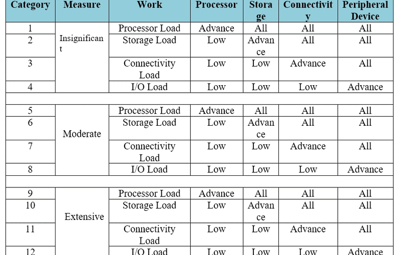
Implementation of Energy Efficiency Cloud Data Center Architecture Model using Green Cloud
Simulator for National Data Center of Bangladesh Rabab Khan Rongon thesis paper
This study proposes an energy-efficient cloud data center architecture for Bangladesh that leverages virtualization, load balancing, and renewable energy to reduce costs and environmental impact while ensuring reliable performance.
Supervisor(s): Krishna Das (IUBAT)
Journal Article
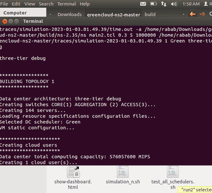
An energy-efficient cloud data center architectural model for the national data center of Bangladesh Rabab Khan Rongon, Krishna Das
Journal of Discrete Mathematical Sciences and Cryptography (Scopus, WoS || Cite Score: 3.1)
An energy-efficient cloud data center architecture for Bangladesh’s National Data Center integrates virtualization, load balancing, and renewable energy to reduce costs and environmental impact while ensuring reliable cloud services.
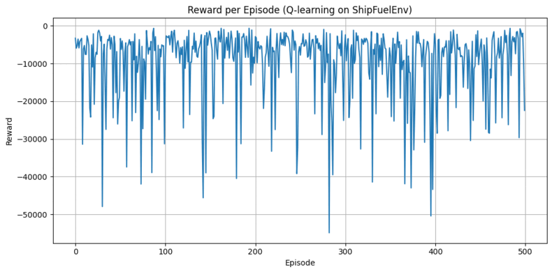
Enhancing Maritime Fuel-use Efficiency and Reduction of Carbon Emission: An Experient with Deep Reinforcement Learning Agent Rabab Khan Rongon, M. Akhteruzzaman, Sadab Khan Prangon
Gazi University Journal of Science (Scopus, WoS)
Status: Under Review
Proposed a DRL-based framework using Q-learning and DQN agents to optimize ship fuel selection, achieving up to 17% lower fuel consumption and 21% lower CO₂ emissions under dynamic voyage conditions.
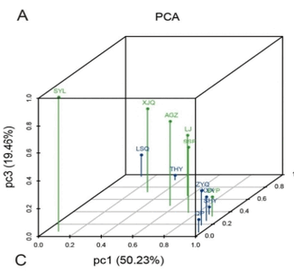
Investigating tRNA-Derived Small RNA Expression Patterns and Bioinformatics Analysis in Epicardial Fat of Atrial Fibrillation Patients
Moriom Akhter Eti, Rabab Khan Rongon
International Journal for Research in Applied Science and Engineering Technology (IF: 7.538)
This research proposes an energy-aware framework for sustainable data centers that reduces power consumption and carbon footprint through workload optimization, renewable integration, and intelligent cooling while maintaining performance and cost efficiency.
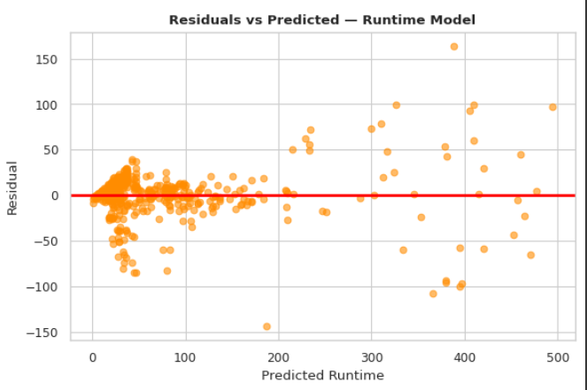
An Explainable AI-Based Multi-Objective Recommendation Framework for Cloud Service Provider Selection Rabab Khan Rongon, Sadab Khan Prangon, Krishna Das, Aminul Islam
code
Status: Under Experiment
This study presents an explainable AI-based framework using XGBoost, LightGBM, and Bayesian optimization for intelligent multi-cloud provider selection, balancing cost and performance with high accuracy and transparent, user-centric recommendations.
Book Chapter
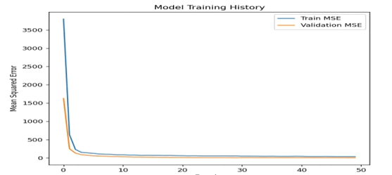
An Attention-Driven Deep Learning Model for Predicting Human Life Expectancy
Aminul Islam, M. Shahriar Zaman, Rabab Khan Rongon, Sheikh Tanjil Sharif,Hosney Jahan
3rd International Conference on Big Data, IoT and Machine Learning (BIM 2025)
Status: Accepted as a chapter in a Book Series of Taylor & Francis
This study develops an attention-based deep learning system using WHO and World Bank data to forecast human life expectancy, where Transformer models outperform traditional approaches and provide a scalable, interpretable tool for evidence-based policymaking.
Conference Article
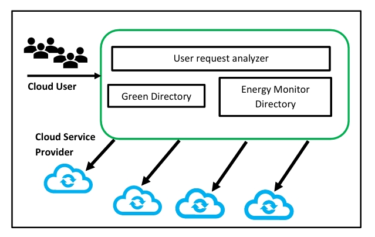
Obstacle to implement sustainable computing in Bangladesh and approach to
being sustainable through green cloud computing methodology Rabab Khan Rongon, Krishna Das
4th International Conference on Sustainable Computing and Management (SUSCOM-2022).
This paper discusses the challenges Bangladesh faces in implementing green and sustainable cloud computing, highlighting the lack of knowledge and policies in developing countries compared to developed nations, and offers solutions for overcoming these barriers.
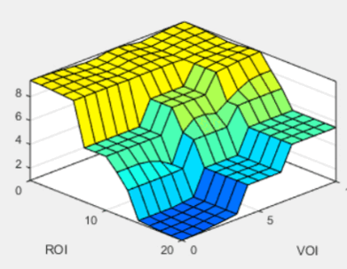
Analyzing Risk Level from RoI and VoI for Robust Data Privacy using Fuzzy Inference System Rabab Khan Rongon, M. Akhteruzzaman, Krishna Das, Sheikh Tanjil Sharif
IEEE 4th International Conference on Robotics, Electrical and Signal Processing Techniques, 2025
This research proposes a novel framework that integrates Return on Investment (RoI) and Value of Information (VoI) within a Fuzzy Inference System (FIS) to assess and balance data privacy risks, enabling organizations to optimize data protection investments and improve decision-making.
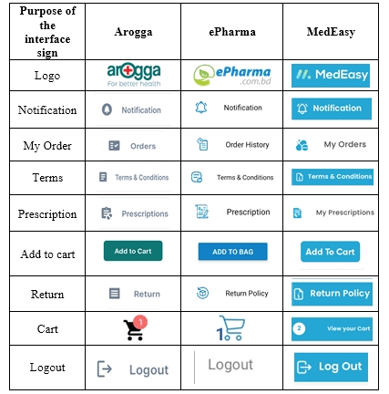
Evaluating the Accessibility of Online Pharmacies'
Mobile Applications in Bangladesh using Heuristic and Semiotic Analysis Rabab Khan Rongon, Sadab Khan Prangon, Sheikh Tanjil Sharif, Anika Ashraf, Krishna Das
IEEE International Conference on Quantum Photonics, Artificial Intelligence, and Networking, 2025
This study evaluates Arogga, ePharma, and MedEasy apps in Bangladesh, finding Arogga best for usability and accessibility while highlighting key design flaws in others and offering insights for inclusive digital pharmacy platforms.
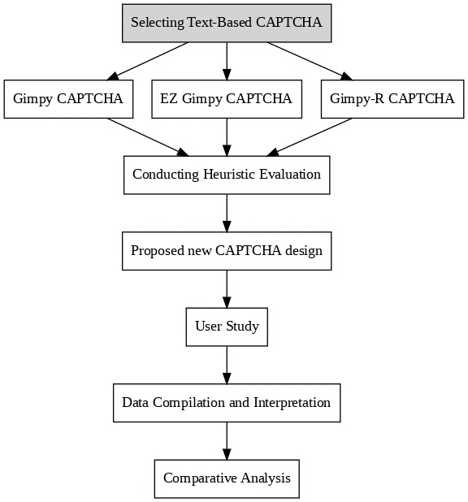
Proposing and Evaluating a new CAPTCHA Systems for Improving Usability and Accessibility Rabab Khan Rongon, Anika Ashraf, Sheikh Tanjil Sharif, Md. Nazrul Islam
IEEE 2nd International Conference on Computing, Applications and Systems (COMPAS 2025)
Status: Accepted
Proposed a dual-layer, accessibility-focused CAPTCHA system combining improved text/audio support with cognitive logic questions, achieving higher success rates, faster completion times, and greater inclusivity without compromising security.
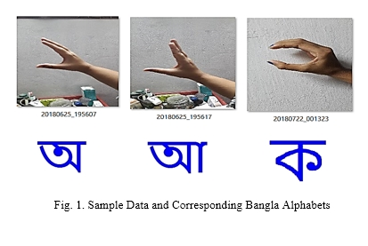
Deep Learning-Based Recognition of Bangla Sign Language Gestures with CNN, VGG16, and MobileNet Rabab Khan Rongon, M. Shahriar Zaman, Sheikh Tanjil Sharif, Sadab Khan Prangon, Krishna Das
IEEE 2nd International Conference on Computing, Applications and Systems (COMPAS 2025)
Status: Under Review
Developed a deep learning-based Bangla Sign Language recognition system using the BDSL49 dataset, where MobileNet achieved 89.2% accuracy, demonstrating the effectiveness of transfer learning for accessible communication tools.
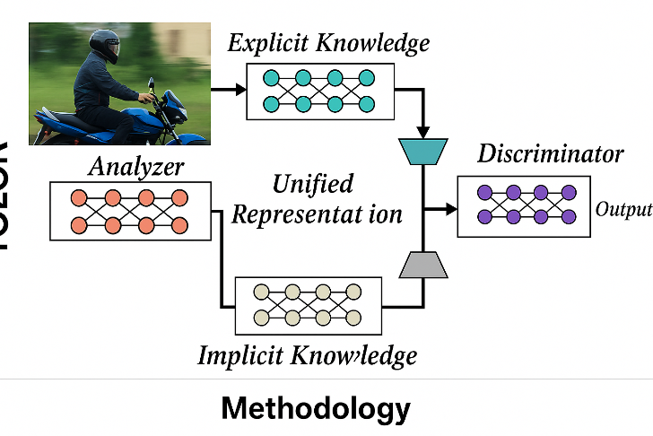
A Real-Time Automated Traffic Violations Detection System for Motorcycles Using YOLOR Sadab Khan Prangon, Rabab Khan Rongon, Krishna Das
IEEE 2nd International Conference on Computing, Applications and Systems (COMPAS 2025)
Status: Under Review
Proposed a real-time traffic law enforcement system for Bangladesh using YOLOR and OCR (with Bengali script recognition) to detect helmetless and triple-riding motorcyclists, achieving 83.92% mAP for helmet detection and 67.25% for license plates.
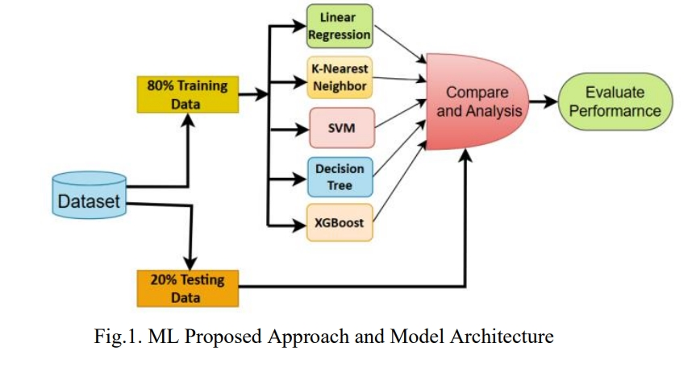
Predicting Renewable Energy Usage in Bangladesh Using Environmental and Climatic Indicators: A District-Level Analysis Aminul Islam, M. Akhtaruzzaman, Shirin Sultana, Rabab Khan Rongon
28th International Conference on Computer and Information Technology
Status: Under Review
This study develops an AI-based predictive framework showing that local environmental factors significantly influence renewable energy adoption in Bangladesh, with Extra Trees Regressor providing the most accurate results.
Academic Credentials
Find below a brief overview of my academic journey (so far).
M.Sc. in Computer Science and Engineering (Major: Artifical Intelligence) [2024-Present]
Department of Computer Science and Engineering
Military Institute of Science and Technology (MIST) ,
Dhaka, Bangladesh
CGPA: 3.50/4.00
Notable Courses: Human Computer Interaction, Advanced Artifical Intelligence, Advanced Machine Learning, Neural Networks, Data Mining, Fuzzy Logic, Advanced Digital Image Processing
B.Sc. in Computer Science and Engineering [2019-2024]
Department of Computer Science and Engineering
International University of Business Agriculture and Technology (IUBAT) ,
Dhaka, Bangladesh
CGPA: 3.21/4.00
Notable Courses:OOP in C++, Data Structure & Algorithm, Database Systems, Software Engineering,
System Design, Theory of Computation, Computer Architecture, Operating Systems, Micro-processor, Compiler Design, Information System Design, Computer Graphics, Computer Networks, Numerical Methods, Discrete Mathematics
Professional Experience
Here are the detailed explanation of my engineering experiences.
Applied AI Test Engineer - III
July, 2025 - Present AskTuring AI Inc.
Technology park in San Diego, California, USA
Work Mode: Remote
Responsibilities: Developed and maintained 100+ automated test cases for AI/ML pipelines and microservices, improving defect detection by 30%, reducing bug-fix turnaround by 25%, and ensuring fairness, accuracy, and robustness of models through rigorous validation.
Software Engineer - II, Quality Assurance and Testing
August, 2023 - July, 2025 Agency Handy
Outram, Central Singapore Community Development Council
Work Mode: Remote
Responsibilities : Led and mentored a team of 4+ QA engineers while designing 100+ automated test cases and delivering actionable QA metrics, boosting defect detection by 30% and reducing release delays by 70%.
Software Engineer - I, Quality Assurance and Testing
Responsibilities : Designed and executed functional, regression, and integration tests while managing defects in JIRA, collaborating with cross-functional teams, and maintaining comprehensive QA documentation.
Research and Teaching Experience
My goal is to pursue a research-oriented career, be it in academia. Here are some of my professional experiences.
Researcher
April, 2024 - Present Quantum Robotics and Automation Research Group
Dhaka, Bangladesh
Work Mode: Hybrid
Research Assistant
August, 2022 - July, 2023 Miyan Research Institute, IUBAT
Dhaka, Bangladesh
Work Mode: Onsite
Teaching Assistant
February, 2021 - July, 2022 Department of Computer Science and Engineering,
International University of Business Agriculture and Technology (IUBAT) ,
Dhaka, Bangladesh
Work Mode: Onsite
Founder and Sr. Instructor of ICT
February, 2018 - November, 2022 Solution Center of Science and Mathematics,
Dhaka, Bangladesh
Work Mode: Onsite
Responsibilities : Taught intermediate ICT topics including: Logic Gates & Boolean Algebra, Programming in C, Flowcharts & Algorithms, Databases, Networking Devices and Real-life Applications of ICT
Honors and Awards
I have been blessed with some accolades time to time, thanks to the amazing mentors and peers from whom I learnt a lot.
Research Publication Grant – Awarded by Miyan Research Institute,IUBAT (2024)
Received $300 grant to support publication of undergraduate thesis in a ISI journal.
Conference APC Grant — IUBAT (2022)
Funded article processing charges for SUSCOM 2022 paper entitled Obstacle to implement sustainable computing in Bangladesh and approach to being sustainable through green cloud computing methodology.
Professor Mahmuda Khanam Scholarship: For Academic performance at IUBAT (2021)
This Scholarship amount is Tk 6000 for each student for one semester . Total Six students is awarded with the scholarship in every semester.
RL (Bob) Southern Scholarship: For Academic performance at IUBAT (2020)
This Scholarship amount is Tk 8000 for each student for one semester . Total two students is awarded with the scholarship in every semester.
{kind=link}